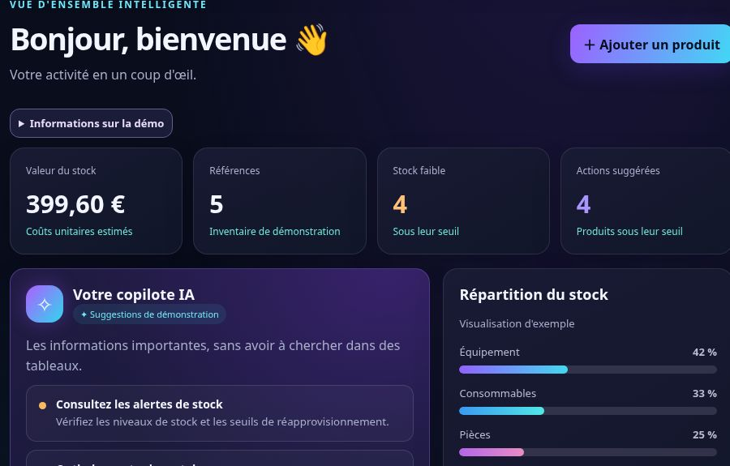
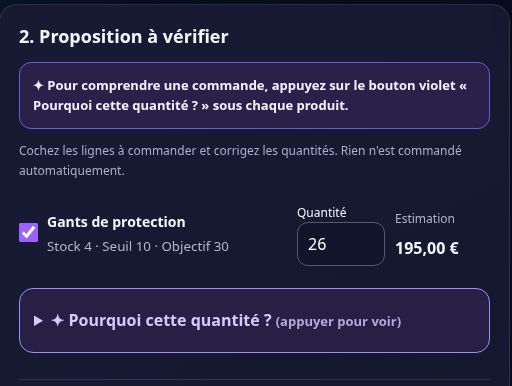

Alertes de stock faible
Anticipez les ruptures
Repérez les références qui passent sous leur seuil de réapprovisionnement.
Gestion des stocks pour les PME
StockPilot AI centralise vos références, vous alerte avant les ruptures et prépare vos commandes fournisseurs.
Réserver ma démo de 15 minutesProgramme pilote : 3 entreprises seulement — 15 jours sans engagement.

Alertes de stock faible
Repérez les références qui passent sous leur seuil de réapprovisionnement.
Scanner de codes-barres
Scannez les articles pour retrouver leur fiche et enregistrer les mouvements de stock.
Assistant IA
Appuyez-vous sur les alertes et les suggestions de quantités pour orienter vos décisions.
Commandes fournisseurs
Préparez vos commandes fournisseurs et vérifiez vos brouillons avant validation.
Tableau de bord
Consultez la valeur du stock, les références et les alertes depuis une même vue.
Sauvegarde cloud
Protégez votre inventaire contre la perte de données grâce à la sauvegarde cloud.

Suivez vos références et préparez les commandes auprès de vos fournisseurs.
Gardez une vue sur vos stocks physiques et repérez les articles à réapprovisionner.
Facilitez les inventaires et anticipez les besoins de réassort au quotidien.
Programme pilote
Envoyez-nous le nom de votre entreprise et vos disponibilités. Nous vous confirmerons le créneau par e-mail.
Demander un créneau par e-mailstockpilot.ai.contact@gmail.com